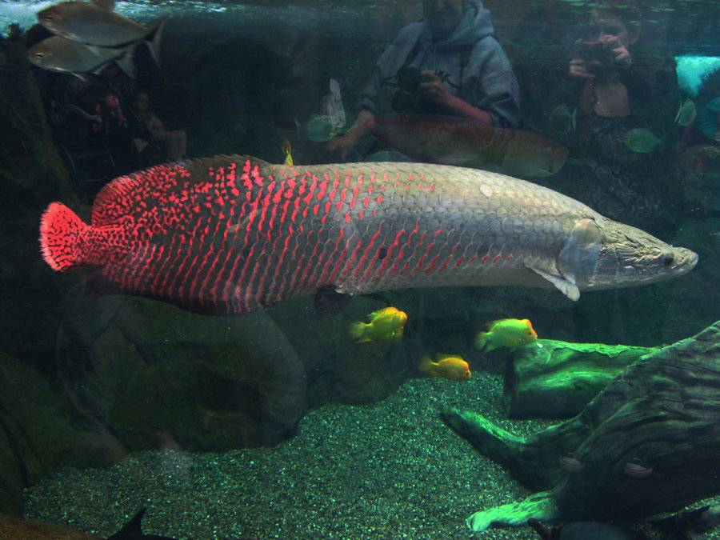

Arapaima
El arapaima es un gran pez de agua dulce que se encuentra en las cuencas de los ríos Amazonas, Orinoco y Esequibo en América del Sur. Es uno de los peces de agua dulce más grandes del mundo con una longitud documentada de más de nueve pies y un peso de más de 400 libras. Su cuerpo tiene forma de torpedo con una cabeza cónica. Las escamas grandes son principalmente de color negro a gris, con marcas rojas. Las escamas son gruesas y duras; la piel se utiliza para diversos fines, incluida la joyería y el calzado. La boca del arapaima está vuelta hacia arriba. Si bien tiene branquias como otros peces, el arapaima obtiene la mayoría de sus necesidades de oxígeno a través de la boca, ya que el pez tiene una vejiga natatoria agrandada y modificada compuesta de tejido similar a un pulmón. Si bien esta adaptación es útil en aguas hipóxicas, la necesidad de salir a la superficie cada veinte minutos hace que los peces sean vulnerables a los humanos.
